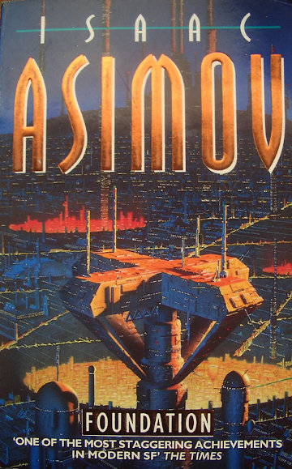
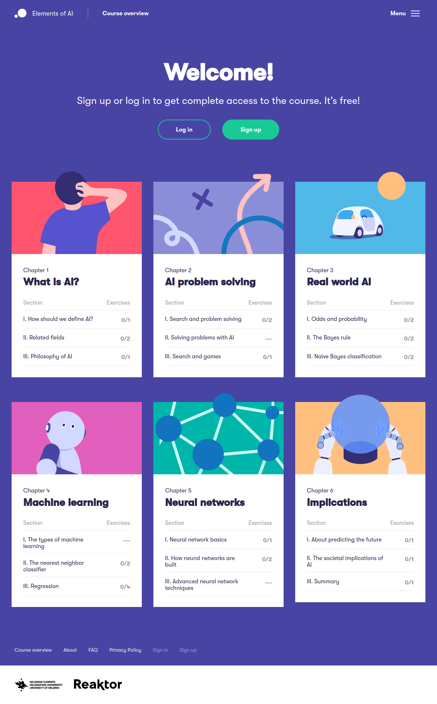

โดย ชิตพงษ์ กิตตินราดร | มกราคม 2563
ย้อนไปในช่วงสามปีที่เรียนม.ปลาย ผู้เขียนใช้เวลาไปกับการอ่านนิยายวิทยาศาสตร์ชุดสถาบันสถาปนา (Foundation Series) ของ Isaac Asimov นิยายชุดนี้เป็นส่วนสำคัญที่ทำให้ผู้เขียนเลือกเรียนเศรษฐศาสตร์ และทำงานด้านนวัตกรรมทางสังคมมาจนถึงทุกวันนี้

ภาพปกหนังสือ Foundation ถ่ายโดย RA.AZ, CC-BY 2.0
แกนหลักของพล็อตเรื่องในสถาบันสถาปนา คือการที่มีนักคณิตศาสตร์ผู้หนึ่งได้พัฒนาศาสตร์การพยากรณ์ ที่เรียกว่า Psychohistory และใช้ข้อมูลที่ได้จากการพยากรณ์ด้วยศาสตร์นี้ มาลดระยะเวลาและผลกระทบของวิกฤติที่มนุษยชาติกำลังเผชิญ (ในบริบทว่าในอนาคต มนุษย์ได้แผ่ขยายตั้งรกรากไปในดาวต่างๆ ทั่วทั้งกาแล็กซี่มาแล้วเป็นเวลานับหมื่นปี จนลืมไปแล้วว่ามนุษย์ถือกำเนิดบนดาวเคราะห์โลกดวงนี้)
จุดมุ่งหมายของการพยากรณ์นั้นไม่ใช่เป็นไปเพื่อการรู้เหตุการณ์ล่วงหน้าโดยตัวมันของเอง แต่คือการรู้สิ่งที่รู้ได้ แต่ปกติมนุษย์รู้ได้ยากเพราะข้อจำกัดของการรับรู้ การประมวลผล และญาณทัศนะของมนุษย์ ข้อจำกัดเหล่านี้เป็นปัจจัยสำคัญที่เป็นอุปสรรคขวางกั้นไม่ให้มนุษย์สามารถแก้ปัญหาอย่างชาญฉลาด หรือพัฒนาตนเองและสังคมให้ก้าวหน้าขึ้นไปได้ ตั้งแต่อดีตเมื่อมนุษย์เริ่มพัฒนามาจนถึงปัจจุบัน เราอยู่กับข้อจำกัดนี้ โดยปรับตัวให้เข้ากับข้อจำกัดและสร้างอารยธรรมที่อยู่บนพื้นฐานของข้อจำกัดนี้ ดังที่เราเห็นว่าสังคมส่วนมากล้วนให้ค่ากับประสบการณ์และความรู้ฝังลึกที่สะสมในตัวบุคคลและวัฒนธรรม
ดังนั้น การพัฒนาปัญญาประดิษฐ์ โดยเฉพาะ Machine learning นี้ ผู้เขียนเห็นว่ากำลังจะเป็นปัจจัยสำคัญที่จะผลักดันให้มนุษย์ก้าวเข้าสู่ยุคที่สอง คือยุคที่การเข้าใจและการตัดสินใจนั้นอยู่บนพื้นฐานของความจริง ไม่ใช่ความเห็นหรือการคาดเดา การที่เราสามารถรู้ได้ว่าอะไรจริงและตัดสินใจบนพื้นฐานของความจริง จะปลดปล่อยเราให้เป็นอิสระจากความไม่รู้ ความไม่แน่ใจ ความหลงผิด และในขณะเดียวกัน ก็สามารถใช้ความรู้นี้มาเสริมสร้างคุณลักษณะและกิจกรรมอันเป็นเอกลักษณ์ของมนุษย์ นั่นก็คืออุดมคติ ความคิดสร้างสรรค์ ศิลปะ และการพัฒนาด้านจิตวิญญาณ อันเป็นขอบเขตที่เครื่องจักรยังไม่อาจแทนที่ได้
หากจะพูดกันเฉพาะในประเทศไทย เรามีปัญหาและความท้าทายต่างๆ มากมายที่ดูเหมือนจะใช้เวลามานานก็ยังไม่สามารถแก้ไขหรือป้องกันได้ ยังไม่นับปัญหาใหม่ๆ ที่เกิดขึ้นอย่างรวดเร็ว รุนแรง และกำลังกลายเป็นความเสี่ยงต่อคน สังคม และสิ่งแวดล้อมเป็นอย่างมาก เป้าหมายในการทำงานของผู้เขียนคือการหาทางแก้ไขปัญหาเหล่านี้ด้วยวิธีการใหม่ๆ ดังนั้นจึงพอจะเห็นว่าแนวทางการใช้ Machine ช่วยทำความเข้าใจและตัดสินใจนั้นมีศักยภาพสูงที่จะช่วยแก้ไขปัญหาเหล่านี้ได้
ยกตัวอย่างเช่น ในเรื่องฝุ่นขนาดเล็ก PM2.5 ที่คนไทยกำลังเผชิญอย่างหนัก ที่ผ่านมาภาครัฐล้มเหลวอย่างสิ้นเชิงที่จะแก้ปัญหา ซึ่งสาเหตุหนึ่งของความล้มเหลวคือการขาดความรู้และข้อเท็จจริงว่า ฝุ่นละอองขนาดเล็กที่เกิดขึ้น มาจากปัจจัยใดมากน้อย อย่างไรก็ตาม วิทยาศาสตร์ข้อมูลและ Machine learning ได้ให้คำตอบต่อเรื่องนี้อย่างชัดแจ้ง ว่าการเผาในที่โล่งนั้นเป็นปัจจัยที่มีส่วนเกี่ยวข้องมากที่สุดต่อปัญหาฝุ่นละอองขนาดเล็ก สิ่งที่เหลือที่ต้องทำ คือการนำเอาข้อเท็จจริงนี้มาปฏิบัติให้เป็นนโยบายโดยผู้มีส่วนเกี่ยวข้อง (ซึ่งทำได้หรือไม่นั้นเป็นอีกปัญหาหนึ่ง)
หรือในเรื่องการดูแลและส่งเสริมพัฒนาการเด็กปฐมวัย ปัจจุบันเริ่มมีความตื่นตัวในการเสริมสร้างพัฒนาการเด็กตั้งแต่ยังเล็ก โดยมีหลักฐานและการวิจัยมากมายที่บ่งชี้ว่าการแทรงแซง (Intervention) ที่เหมาะสมจะทำให้เด็กเติบโตมามีความสามารถในการเรียนรู้และมีความสุขในระยะยาวมากกว่าการไม่ทำอะไรเลย ปัญหาอยู่ที่ว่า หน่วยงานที่มีหน้าที่ส่งเสริมพัฒนาการเด็ก เช่นศูนย์พัฒนาเด็กเล็กที่กระจายอยู่ตามองค์การบริหารส่วนตำบลทั่วประเทศ ไม่สามารถรู้ได้อย่างทันท่วงทีว่าเด็กคนไหนจำเป็นต้องเสริมพัฒนาในด้านใด หรือกว่าจะรู้ก็ต้องใช้เวลาหลายเดือนหรือเป็นปี เป็นการสูญเสียนาทีทองของพัฒนาการไปอย่างน่าเสียดาย ในเรื่องนี้ Machine learning สามารถเข้ามาช่วยพยากรณ์ได้ว่าเด็กคนไหนมีพัฒนาการด้อยด้านใด และจำเป็นแค่ไหนที่จะต้องเสริมในด้านต่างๆ โดยสามารถรู้ได้ตั้งแต่วันแรกที่รับเด็กเข้ามาในศูนย์ฯ จากการเก็บข้อมูลและหาความสัมพันธ์ระหว่างปัจจัยต่างๆ ในเด็กแต่ละคน เช่นสุขภาพ การเลี้ยงดู สภาพครอบครัว ฯลฯ
ส่วนในเรื่องสุขภาพจิต ปัจจุบันมีผู้มีปัญหาด้านจิตใจที่ต้องการคำปรึกษาเป็นจำนวนมาก และหลายคนก็มีปัญหาหนักที่เป็นความเสี่ยงในการฆ่าตัวตาย จำนวนผู้ต้องการคำปรึกษาที่มากมาย ทำให้บริการให้คำปรึกษาต่างๆ นั้นไม่สามารถให้บริการได้ทัน ทำให้ผู้ที่มีปัญหาจำนวนมากไม่ได้รับการปรึกษา หรือได้รับช้าเกินไป ในเรื่องนี้ เราสามารถใช้เทคโนโลยีอย่างแชทบอท ผนวกกับ Machine learning ในการตรวจหาได้ว่าผู้ขอรับคำปรึกษาคนไหนมีความเสี่ยงในการฆ่าตัวตาย เพื่อที่จะส่งเคสดังกล่าวให้ผู้ให้คำปรึกษาและช่วยเหลือที่เป็นมนุษย์มาดูแลได้ทันที เป็นเครื่องมือในการคัดกรองความเสี่ยงตามหลักการแพทย์
และด้วยเทคนิคเดียวกัน เราสามารถตรวจหาสิ่งผิดปกติจากฐานข้อมูล Open data เพื่อตรวจหาการทุจริตคอร์รัปชันประเภทต่างๆ เช่นการจัดซื้อจัดจ้างภาครัฐ โดยการออกแบบกลไกการตีความข้อมูลที่เป็นข้อมูลสาธารณะอยู่แล้ว
เช่นเดียวกับที่คนส่วนมากในยุคปัจจุบันสามารถใช้คอมพิวเตอร์และอุปกรณ์ต่างๆ เพื่อทำงานสำนักงาน ค้นหาข้อมูล และสื่อสารกันได้ ผู้เขียนมีความเห็นว่าคนในอนาคตควรจะมีความเข้าใจและความสามารถเบื้องต้นในการทำให้ Machine นั้นเรียนรู้และให้คำตอบที่เป็นข้อเท็จจริงแก่เรา ทฤษฎี แนวคิด และการปฏิบัติเรื่องวิทยาศาสตร์ข้อมูลและ Machine learning อาจดูเข้าถึงได้ยาก เข้าใจยาก และทำได้ยากสำหรับคนทั่วไปในปัจจุบัน แต่ก็เหมือนกับที่ยุคหนึ่ง คนทั่วไปรู้สึกว่าอินเทอร์เน็ตเป็นพื้นที่ลึกลับ เข้าถึงได้ยาก หรือย้อนไปอีกในยุคที่การศึกษาในระบบยังไม่แพร่หลาย คนส่วนมากก็รู้สึกว่าการคำนวนทศนิยม เศษส่วน อัตราเร็ว เป็นเรื่องยากเกินเข้าใจ สิ่งที่ยากในยุคหนึ่ง หากได้รับการพิสูจน์ว่ามีประโยชน์อย่างกว้างขวาง ก็จะพัฒนากลายเป็นสิ่งที่เข้าใจและปฏิบัติกันทั่วไปในยุคต่อมา
การสร้างความเข้าใจเรื่องปัญญาประดิษฐ์ วิทยาศาสตร์ข้อมูล และ Machine learning สำหรับคนทั่วไป มีการดำเนินการแล้วในประเทศฟินแลนด์ โดยเปิดคอร์สออนไลน์ฟรีสำหรับทุกคน ซึ่งผู้จัดทำมีเป้าหมายให้ประชาชนฟินแลนด์ 1% ได้เรียนคอร์สนี้

หนึ่งในปัจจัยสำคัญที่ทำให้คนทั่วไปเรียนรู้ Machine learning ได้ง่ายขึ้น คือความแพร่หลายของภาษาโปรแกรมระดับ High-level ที่เข้าใจง่าย ใช้ง่าย อย่าง Python และ Library ต่างๆ ที่เป็น Framework สำหรับการสร้าง Machine learning system เช่น scikit-learn และ TensorFlow ที่ได้จัดการเรื่องการวางสูตรคำนวนที่ซับซ้อนและละเอียดอ่อนให้เราแทบทั้งหมด ผู้เขียนเองถึงแม้จะมีความรู้พื้นฐานและประสบการณ์ด้านคอมพิวเตอร์มาบ้าง แต่ไม่เคยได้ศึกษาการเขียนโค้ดจริงๆ จังๆ ก็สามารถใช้เวลาเพียงแค่ไม่ถึง 6 เดือนในการเรียนรู้ภาษา Python และ Machine learning จนมีความรู้และความมั่นใจในการนำมาประยุกต์ใช้
แต่เมื่อเครื่องมือนั้นพร้อมและใช้งานง่ายขึ้น ก็เป็นหน้าที่ของเราที่จะต้องมีความเข้าใจในหลักการและเทคนิคต่างๆ เพื่อให้สามารถเลือกใช้เครื่องมือต่างๆ นั้นได้เหมาะสมกับโจทย์และเป้าหมายที่ต้องการ นี่เป็นที่มาและแรงบันดาลใจให้ผู้เขียนได้พยายามถ่ายทอดหลักการของ Machine learning อย่างค่อนข้างลึกซึ้ง ประกอบกับการแนะนำวิธีการในการปฏิบัติจริง เพื่อช่วยให้ผู้อ่านสามารถเริ่มต้นเส้นทางในการเรียนรู้เรื่องนี้ได้ และในขณะเดียวกัน ก็เป็นการฝึกทบทวนความเข้าใจของผู้เขียนเอง จากสิ่งที่ได้ศึกษาและปฏิบัติมา ให้แม่นยำชัดเจนขึ้นด้วย